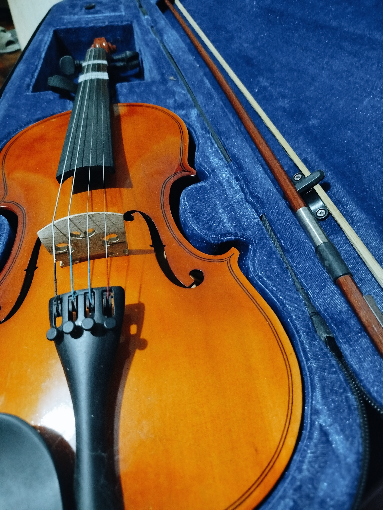
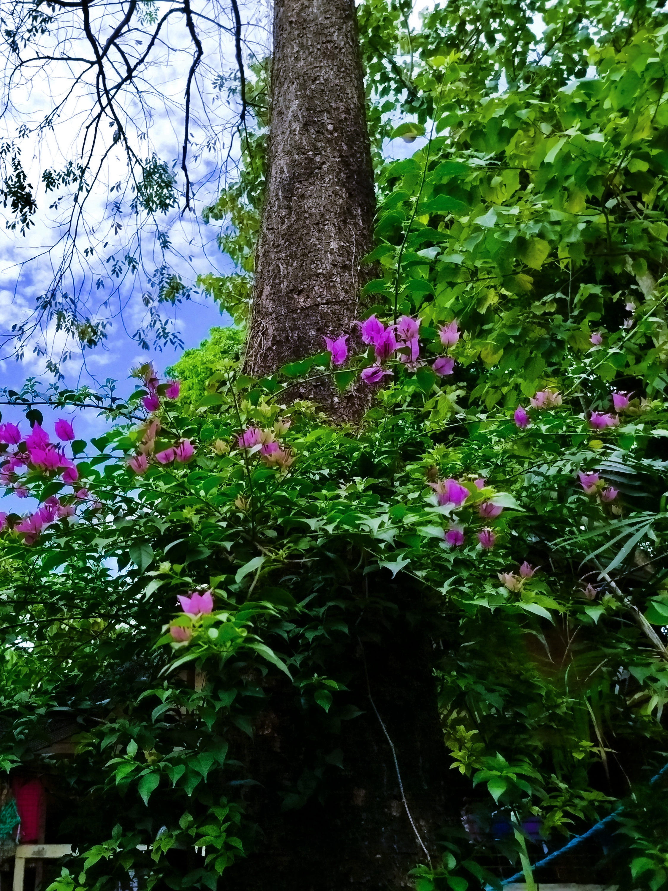
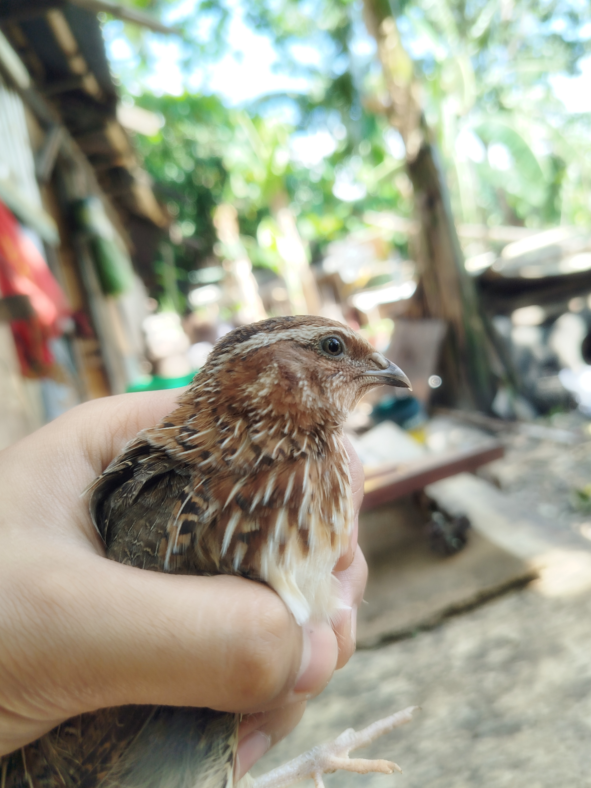

My Hobbies

Musical Passion
From a young age, I’ve found joy in learning and playing musical instruments. The soothing and peaceful nature of
music has always been a source of relaxation for me. I am proficient in playing both the guitar and ukulele.

Nature Inspired Focus
I enjoy cultivating a variety of plants, as being surrounded by greenery brings
a calming atmosphere that helps clear my mind. Gardening offers a
refreshing break, often sparking new ideas and focus when I return to coding.

Stargazing Through the Lens
Ever since childhood, I've been fascinated by the night sky. Today, that curiosity has
evolved into a passion for astrophotography capturing
the beauty of stars, the moon, and the vast cosmos as a creative and inspiring hobby.

A Lifelong Love for Animals
Since childhood, I've had a deep fascination with pets of all kinds—birds,
fish, reptiles, and more. Their unique behaviors
and ways of living continue to amaze me and spark my curiosity every day.